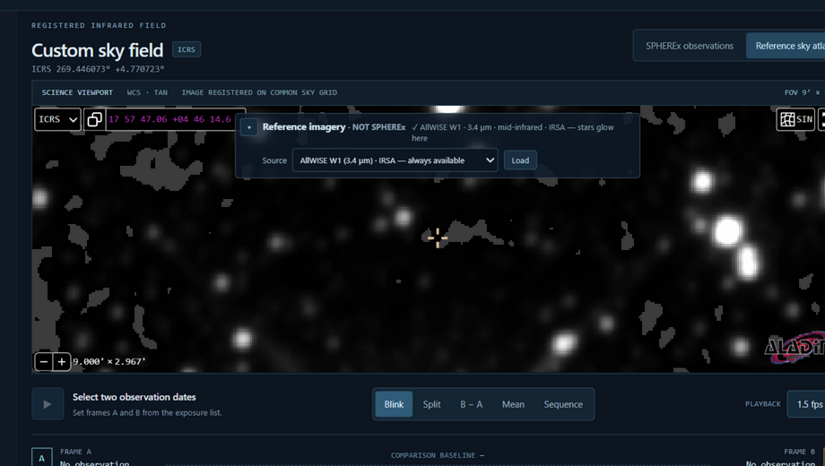
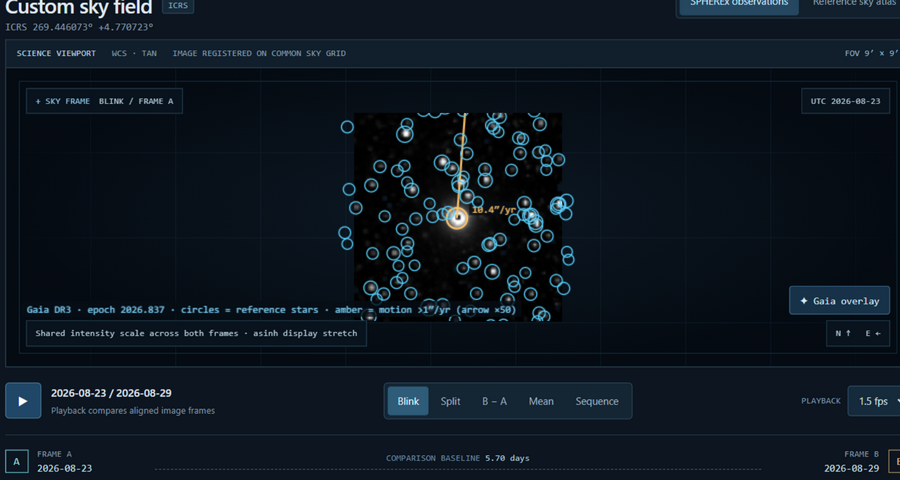

Blink the sky. Find what moves. A live window into NASA/IPAC SPHEREx Quick Release data — built for the search for Planet X.
A cold world hundreds of AU away barely glows — but it moves against the fixed stars. SPHEREx is the first all-sky infrared instrument built to catch exactly that signal, re-scanning the whole sky every six months. The data ships weekly from NASA/IPAC IRSA. What was missing was a motion workbench anyone could drive — the way WiseView let the public make hundreds of discoveries with WISE. QoreX closes that gap.
Find every SPHEREx exposure at any sky position, fetch official FITS cutouts, mask pixels with the mission's flag-bit table, reproject epochs onto one shared sky grid — then blink, split, difference and sequence them on one brightness scale. A Gaia DR3 overlay, proper-motion-propagated to each observation epoch, separates known fast movers from unknown ones. On-the-fly 0.75–5 µm spectrophotometry with per-point errors. Evidence exports with dataset DOIs.
The next Planet X finder might not be an astronomer. It might be a student, a teacher, a curious coder blinking two real SPHEREx epochs. QoreX hands the public the comparator — verified live on all five challenge targets, including Barnard's Star flagged automatically at 10.4″/yr against a 37-day baseline of 130 real observations.


Every pixel traces back to IRSA — nothing simulated, nothing cached, nothing invented.
IRSA SIA v2 lists every SPHEREx exposure at your target — QR3, with QR2 fallback.
Official cutout service delivers IMAGE, FLAGS, VARIANCE and WCS-WAVE FITS layers.
Bit-aware flag masking; every epoch reprojected to one shared sky grid.
Blink, split, B−A residual and 2–8 frame sequences on one brightness scale.
Gaia DR3 cross-match, live spectra, evidence JSON export with dataset DOIs.
Bit-exact SPHEREx flag masking per the official Explanatory Supplement. Empty results are explicit states — the tool never fabricates an image, an epoch, or a spectrum. Residual cues are labelled review aids, not detections. Every render carries IRSA provenance in its headers, and every session exports reproducible evidence with dataset DOIs (QR3: 10.26131/IRSA662).
WINDOWS — double-click run_windows.bat → http://127.0.0.1:8000
LINUX / macOS — bash run_unix.sh
ANY CLOUD — docker build -t qorex . && docker run -p 7860:7860 qorex